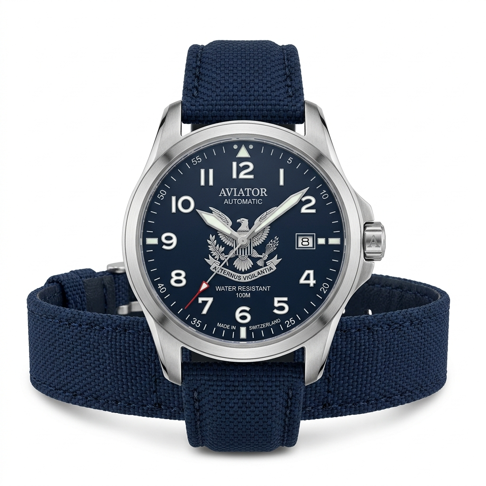
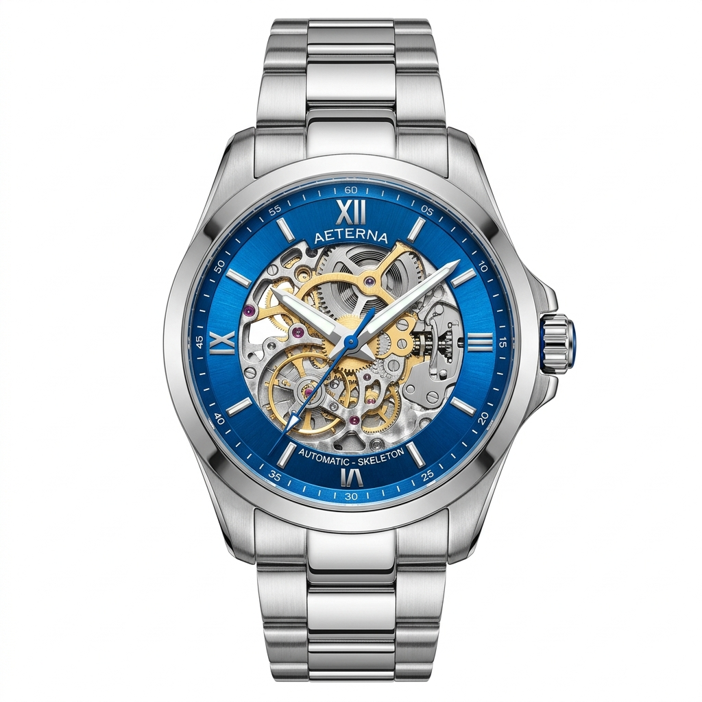
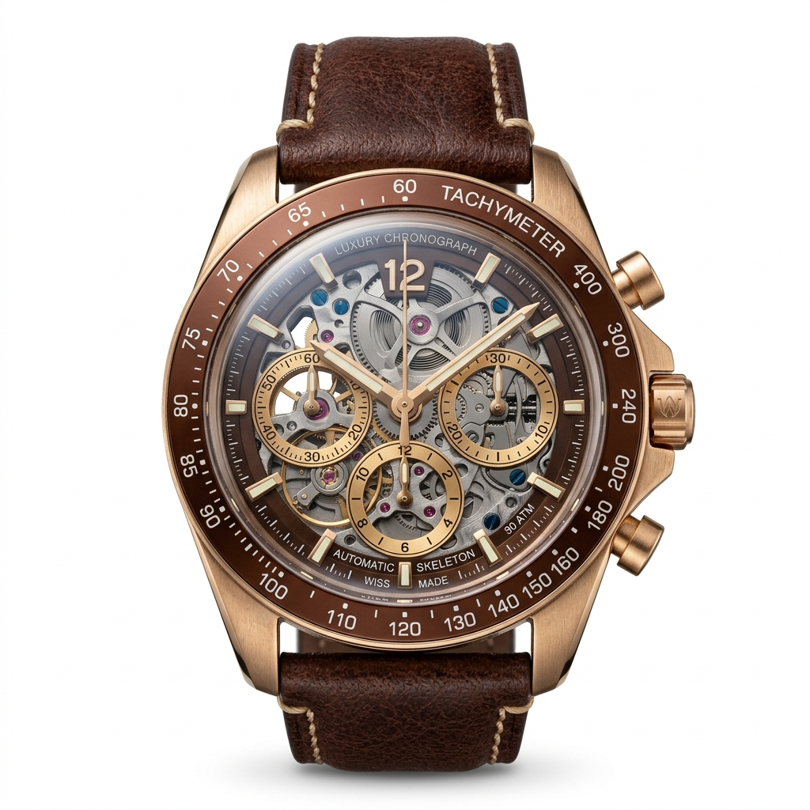

OLEVS
TIME SET IN BRASS
/
FINE TIMEPIECES
/
DRESSED
/
EVERYDAY WEAR
EN
‹
›

Specs
×
Stealth Tactical
Material
Titanium Grade 5
Glass
Sapphire Crystal 2.0
Health Tracker
Tactical GPS & HR
Power Reserve
Up to 100 Hours
Explore Stealth Tactical

Specs
×
New Generation
Material
Armor Aluminum
Screen
AMOLED Always-On
Health Tracker
BioActive Sensor
Power Reserve
Up to 80 Hours
Explore New Generation

Specs
×
Bronze Heritage
Material
Brushed Satin Bronze
Strap
Hybrid Calfskin
Health Tracker
ECG & Sleep Vitality
Power Reserve
Up to 70 Hours
Explore Bronze Heritage